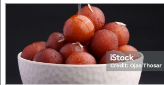

1. Khoya (also known as mawa or dried milk solids)
2. All-purpose flour (maida)
3. Baking soda
4. Ghee (clarified butter) or oil for frying
5. Sugar
6. Water
7. Rosewater or cardamom powder (for flavoring)
8. Saffron strands (optional, for garnish)
ingredients
ingredients
ingredients